1 / 3

彩云之南，孔雀之乡——昆明
2 / 3

彩云之南，孔雀之乡——大理
3 / 3

彩云之南，孔雀之乡——丽江
云南（简称云或滇），中华人民共和国省级行政区，素有动物王国、有色金属王国之称，云南即“彩云之南”、“七彩云南”。
云南位于中国西南的边陲，东面是广西和贵州省，北面是四川省，西北面是西藏自治区；属亚热带季风气候、热带季风气候，境内拥有丽江古城、石林等旅游景点。
南气候基本属于亚热带高原季风型，立体气候特点显著，类型众多、年温差小、日温差大、干湿季节分明、气温随地势高低垂直变化异常明显。滇西北属寒带型气候，长冬无夏，春秋较短；滇东、滇中属温带型气候，四季如春，遇雨成冬；滇南、滇西南属低热河谷区，有一部分在北回归线以南，进入热带范围，长夏无冬，一雨成秋。在一个省区内，同时具有寒、温、热（包括亚热带）三带气候。云南河川纵横，湖泊众多。全省境内径流面积在100平方公里以上的河流有889条，分属长江（金沙江）、珠江（南盘江）、元江（红河）、澜沧江（湄公河）、怒江（萨尔温江）、大盈江（伊洛瓦底江）6大水系。红河和南盘江发源于云南境内，其余为过境河流。